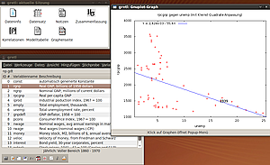
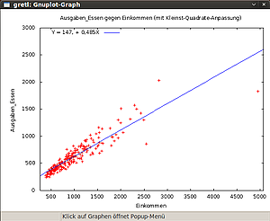

Gretl
Dieser Artikel wurde für die folgenden Ubuntu-Versionen getestet:
Ubuntu 14.04 Trusty Tahr
Zum Verständnis dieses Artikels sind folgende Seiten hilfreich:
Gretl  ist ein wissenschaftliches Programm, das von Allin Conttrell und Riccardo „Jack“ Lucchetti in C programmiert wurde. Mit Hilfe von Gretl ist es möglich, ökonometrische (hauptsächlich Regressionsanalysen), statistische sowie Zeitreihen-Analysen durchzuführen. Dabei baut Gretl auf eine einfache GUI-Nutzung und bietet zudem die Möglichkeit, Eingaben auch via Konsole zu akzeptieren. Vorteil dieser Eingabemethode ist das "Skripting", wobei längere Berechnungsalgorithmen in einem Skript gespeichert und in einem "Batch" abgearbeitet werden können.
ist ein wissenschaftliches Programm, das von Allin Conttrell und Riccardo „Jack“ Lucchetti in C programmiert wurde. Mit Hilfe von Gretl ist es möglich, ökonometrische (hauptsächlich Regressionsanalysen), statistische sowie Zeitreihen-Analysen durchzuführen. Dabei baut Gretl auf eine einfache GUI-Nutzung und bietet zudem die Möglichkeit, Eingaben auch via Konsole zu akzeptieren. Vorteil dieser Eingabemethode ist das "Skripting", wobei längere Berechnungsalgorithmen in einem Skript gespeichert und in einem "Batch" abgearbeitet werden können.
Da Gretl mit Gnuplot zusammenarbeitet, können statistische Auswertungen in diversen Diagrammen und Abbildungen ausgegeben und sehr einfach manipuliert werden. Gretl ist Open-Source-Software, steht unter GNU–Lizenz und kann unter Windows und Linux benutzt werden.
Funktionen lt. Projektseite sind:
Multilingual (Deutsch, Französisch, Italienisch, Spanisch usw.)
Eine Vielzahl von Schätzfunktionen: kleinste Quadrate, Maximum-Likelihood, GMM; Einzel- und System-Gleichung-Methoden
Zeitreihe-Methoden: ARMA, GARCH, VARs und VECMs, Unit-root- und Kointegration-Tests usw.
Output-Modelle als LaTeX-Dateien, im Tabellen- oder Gleichungs-Format
Integrierte Skriptsprache: Eingabe von Befehlen entweder über die GUI oder über ein Skript
Befehlsschleife für Monte-Carlo-Simulationen und iterative Schätzverfahren
GUI-Controller für die Feinabstimmung Gnuplot-Grafiken
Hinweis:
Seit Version 1.8.0 ist es möglich, SPSS-Dateien direkt zu importieren.

Installation¶
Es muss nur das Paket
gretl (universe)
 mit apturl
mit apturl
Paketliste zum Kopieren:
sudo apt-get install gretl
sudo aptitude install gretl
installiert werden [1].
Quellcode kompilieren¶
Da in den offiziellen Paketquellen u.U. nur eine ältere Version des Programms angeboten wird, möchte man eventuell eine aktuelle Version von Gretl selbst aus dem Quellcode kompilieren. Die Quelltextversion hat diverse Abhängigkeiten , deren Auflösung zuerst sichergestellt werden muss:
libgtk2.0-dev
libxml2-dev
lapack
libfftw3-3
gnuplot (universe)
libreadline5 (optional)
gnome (universe, optional)
libgmp3c2 (optional)
mit apturl
Paketliste zum Kopieren:
sudo apt-get install libgtk2.0-dev libxml2-dev lapack libfftw3-3 gnuplot libreadline5 gnome libgmp3c2
sudo aptitude install libgtk2.0-dev libxml2-dev lapack libfftw3-3 gnuplot libreadline5 gnome libgmp3c2
Anschließend lädt man den Quelltext auf der Projekt-Website herunter und entpackt [2] ihn. Nun kann das Programm kompiliert [3] werden.
Weitere Paketquellen¶
Weiterhin kann man Gretl-Pakete mitsamt abhängigen Paketen auf den Servern von Debian finden: Gretl 
Hinweis!
Zusätzliche Fremdquellen können das System gefährden.
Benutzung¶
Start¶
Grundlagen¶
Beispiel anhand einer einfachen Regressionsanalyse:
Ziel einer Regressionsanalyse ist es, Beziehungen zwischen einer abhängigen und einer oder mehreren unabhängigen Variablen festzustellen. Ein Beispiel, welches in diesem Artikel aufgefasst wird ist, wie viel Geld gibt man mehr für Nahrung aus, wenn man einen bestimmten Betrag mehr verdient. Weitere Fragestellungen könnten sein, was der Grundgeldbetrag ist, den jeder Mensch für Nahrung ausgibt, egal ob er das nötige Geld hat oder nicht.
Dateneingabe bzw. Import¶
"Datei -> Öffne Daten -> Beispieldateien". Im nachfolgenden Fenster im ersten Tab "Gretl" die Datei "Engels" auswählen. Nun sieht man im Gretl-Fenster die offene Datei bestehend aus der ID#, den Variablennamen und einer Beschreibung zu jeder Variablen. Die Beschreibung der Variablen wird auch später dazu genutzt, um erstellte Graphen zu beschriften.
Mit Rechtsklick ( ) auf eine Variable wird das Untermenü geöffnet, welches verschiedene Optionen anbietet, die Variable zu manipulieren. Für dieses Beispiel ändert man den Namen der Variablen
) auf eine Variable wird das Untermenü geöffnet, welches verschiedene Optionen anbietet, die Variable zu manipulieren. Für dieses Beispiel ändert man den Namen der Variablen foodexp in Ausgaben_Essen und die Variable income in Einkommen. Dafür klickt man mit der rechten Maustaste () auf den Variablennamen und wählt "Bearbeite Attribute".
Schätzen der Ausgaben¶
Aus den obigen Daten lassen sich die durchschnittlichen Ausgaben für Lebensmittel schätzen. Danach kann eine Aussage getroffen werden, bei welcher Einkommenshöhe wie viel Geld durchschnittlich für Lebensmittel ausgegeben wird.
Dazu klickt man im Hauptfenster auf "Modell -> kleinste Quadrate ...". Im sich nun öffnenden Fenster wird das Schätzmodell genauer spezifiziert. Dazu wählt man die Variable Ausgaben_Essen aus und fügt sie als abhängige Variable ein. Die Variable Einkommen hingegen fügt man als unabhängige Variable hinzu. Nach Klick auf "OK" wird das Ergebnisfenster angezeigt, das man ausgeben, drucken, in Latex importieren oder weiter bearbeiten kann. Um nun eine lineare Formel aus den Ergebnissen zu erhalten, klickt man auf "Latex -> Ansicht -> Gleichung" und erhält folgende Gleichung:
Ausgaben Essen: 147,475 + 0,485178Einkommen
Diese Gleichung funktioniert nach dem Motto: y = m*x + b. Sie wurde hier nur umgestellt nach: y=b+m*x
Setzt man für x bzw. das Einkommen einen beliebigen Wert ein, können einfach die zu erwartenden Ausgaben für Essen ermittelt werden.
Beispiel:
Einkommen 3000 GE
0,485178 * 3000 + 147,475 = 1603,009 GE
Visualisierung¶
Um nun grafisch darzustellen, wie viel Geld für Lebensmittel ausgegeben wird, kann auf das 3. Symbol von rechts in der unteren Leiste geklickt werden (X-Y-Graph). Diese Aktion öffnet ein neues Fenster, in dem ausgewählt werden muss, welche Variable die abhängige und welche Variable die unabhängige Variable ist. Die unabhängige Variable (das Einkommen) wird der Y-Achse hinzugefügt. Die abhängige Variable hingegen wird der Y-Achse zugeordnet. Danach sollte der X-Y-Graph wie unten angezeigt aussehen.

Gretl fügt automatisch eine Regressionsgerade in den Plot (entspricht der Berechnung).
Probleme¶
Seit Ubuntu 11.04 scheint es Probleme mit der Version aus den Paketquellen zu geben. Das Programm muss eventuell von Hand kompiliert werden oder eine aktuellere Packetquelle verwendet werden. Siehe hierzu 720089.


- Erstellt mit Inyoka
-
 2004 – 2017 ubuntuusers.de • Einige Rechte vorbehalten
2004 – 2017 ubuntuusers.de • Einige Rechte vorbehalten
Lizenz • Kontakt • Datenschutz • Impressum • Serverstatus -
Serverhousing gespendet von